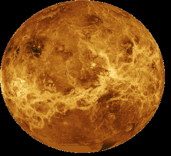

Venus
Terug naar de Home Page
Informatie
- Venus staat na mercurius het dichtst bij de zon
- Naam komt van de Romeinse godin van de liefde
- Gemiddelde temperatuur is 480 graden Celsius
- De atmosfeer bestaat voor het grootste deel uit koolstofdioxide (96%)
- Boven venus hangt een wolkendek van fijne druppels zwavelzuur
- Venus heeft 2 grote hooglanden met daartussen dieptes
- Geen water
Symbool: ♀

↩ Mercurius
-
Aarde ↪